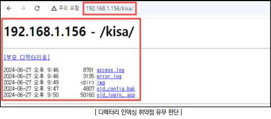
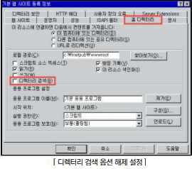
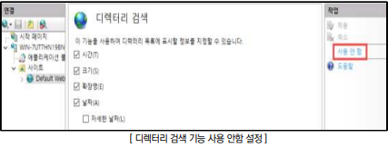

점검 목적
- 디렉터리 인덱싱 취약점을 제거하여 특정 디렉터리 내 불필요한 파일 정보의 노출 및 비인가자가 민감한
파일에 대한 접근을 차단
디렉터리 인덱싱 취약점이란?
- 특정 디렉터리의 초기 페이지(index.html, home.html, default.asp 등) 파일이 존재하지 않을 때 디렉터리 목록을 출력하는 취약점
판단 기준
- 양호 : 디렉터리 파일 리스트가 노출되지 않는 경우
- 취약 : 디렉터리 파일 리스트가 노출되는 경우
점검 방법
Step 1) URL 경로 중 확인하고자 하는 디렉터리 경로에 대하여 주소창에 입력하여 인덱싱 여부 확인

조치 방법(서버별)
Apeche
- httpd.conf 파일 내 Indexes 옵션 제거 후 서버 재기동
<Directory /var/www/html>
Options Indexes FollowSymLinks
# Indexes 옵션 제거
Options FollowSymLinks
</Directory>
Tomcat
- web.xml 파일 내 아래 지시자 수정 후 서버 재기동
<init-param>
<param-name>listings</param-name>
<param-value>false</param-value>
</init-param>
IIS (6.0 이하 기준)
- 인터넷 정보 서비스 → 등록 정보 → 홈 디렉터리 → 디렉터리 검색 해제

IIS (7.0 이상)
- IIS 관리자 → 디렉터리 검색 → 사용 안 함

Nginx
- /etc/nginx/sites-available/default 등 파일 내 아래 지시자 수정 후 서버 재기동
server {
location / {
autoindex off;
}
}